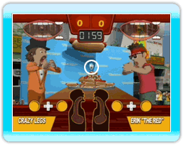

15 |
Utiliser les nourritures bonus |
 |
Parfois, vous verrez un symbole coloré au-dessus d’un aliment. C’est un bonus. Les nourritures bonus vous donnent des pouvoirs offensifs et défensifs particuliers. Lorsque vous en bâfrez un, il va dans une de vos coupelles. Vous pouvez utiliser la nourriture bonus présente dans votre coupelle, en appuyant sur gauche ou droit sur la manette +. Si vos coupelles sont pleines, vous ne pourrez plus prendre de nouvelles nourritures bonus. Si vous voyez quelque chose que vous voulez, assurez-vous d’utiliser les nourritures bonus en votre possession avant de le manger. Dans les modes Single Player (Un seul joueur) et Versus (Un contre un), vous devrez ramasser et manger chaque nourriture bonus avant de pouvoir l’utiliser. Dans le mode Nintendo Wi-Fi Connection (Connexion Wi-Fi Nintendo), vous pourrez utiliser les nourritures bonus dès que vos mains toucheront l’assiette ; le rythme du jeu n’en sera que plus rapide. Si vous voyez une nourriture bonus que vous désirez, attrapez-la avant votre adversaire ! L’utilisation des nourritures bonus demande de la stratégie. Observez tous leurs effets afin d’apprendre les meilleures façons de s’en servir. Beaucoup d’entre elles ont des effets secondaires secrets, essayez-les donc en combinaisons différentes. La liste entière des nourritures bonus et de leurs effets peut être trouvée dans ce manuel. |
 |
 |
 |